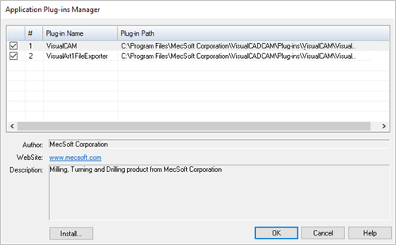

After you have installed the software and if you find that the VisualCAM menu does not appear in the main menu of VisualCAD, please try restarting your computer.
If VisualCAM does not automatically load there is probably an error in the installation of VisualCAM. You can try to manually load VisualCAM by going to the Tools menu bar entry in VisualCAD and choose Application Plug-ins. This will bring up the dialog shown below:
 Dialog Box: Application Plug-ins Manager Check the box to the left of a plug-in name to enable it. If a plug-in does not appear in the list, click the Install button from the Application Plug-ins Manager. Browse to Plug-ins and VisualCADCAM 2024 folder. Select VisualCAM2024.vca. Click OK to close Application Plug-ins Manager. Once the plug-in is loaded you will see the VisualCAM browser windows as well as the VisualCAM menu bar entry in VisualCAD. If you exit VisualCAD normally, VisualCAM will automatically load the next time you open a new session of VisualCAD. |
Make sure that the software was correctly installed. To do this you can browse to the installation folder of VisualCADCAM and make sure that the file VisualCAM2024.vca is present. Also make sure that all the folders described in the following section are correctly installed. If you detect an incorrect installation, uninstall the software completely and reinstall it using the installation program again. This can be done by launching the VisualCAM install program and selecting the Remove option. You can uninstall the software from Control Panel and Add or Remove Program. If you are running Windows 8 or higher, you can uninstall by selecting Uninstall or Change a Program under Control Panel-Programs and Features. |